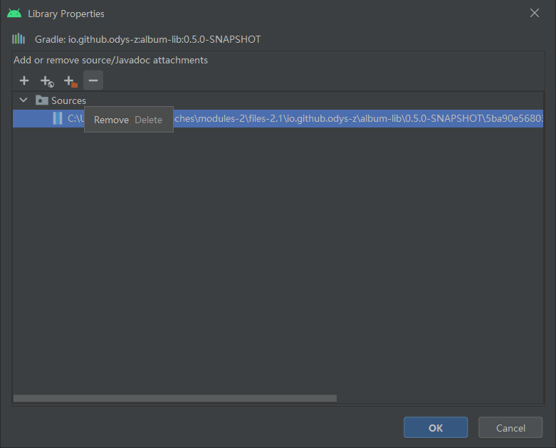

Tips¶
Tips for test/jample trouble¶
Additionally, if @anlient/semantier is installed in js/anreact/node_modules, the testing project, jsample won’t work as Protocol.sk been populated by test/jsample/app.jsx.
test/jsample will use different Protocol than @anclient/anreact.
For @anclient/anreact, it will use:
js/anreact/node_modules/@anclient/semantier/protocol.js/Protocol
For test/jsample, it will use (via npm link):
js/semantier/protocol.js/Protocol
This will leads to failed on binding DatasetCombos.
Solution
To avoid this, link from anreact to semantier.
In js/anreact:
npm link @anclient/semantier
Note
Load such things from server at runtime?
Login error: Invalid AES key length: 26 bytes¶
If the user’s password is encrypted with a different root key, failed decryption will results in this error.
context.xml:
Android Studio refuse to load latest Maven snapshot¶
This error will have gradle dependencies failed for updating or downloading the latest deployed Maven snapshot version.
Solution¶
Brutally delete .gradle cache not always working. Slow down the updating or follow this answer.
{kind=link}